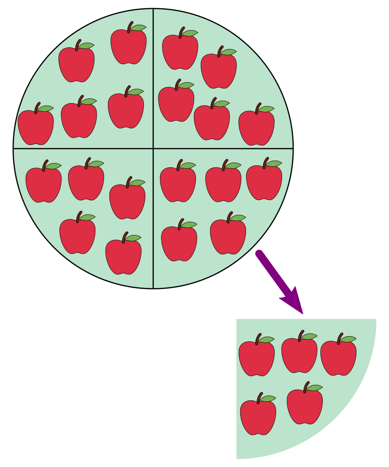

Pjesëtimi
Pjesëtimi në matematikë është një operacion aritmetik i cili është veprim i kundërtë me shumëzimin. Pjesëtimi është një nga katër veprimet themelore aritmetike (mbledhja, zbritja, shumëzimi dhe pjesëtimi), e i cili bëhet për të gjetur se sa herë ndahet një numër në pjesë të barabarta ose sa herë përmbahet një numër te një numër tjetër.

Nëse, c here b barazi me a:
c x b = a
ku b nuk është zero, atëhere a pjestuar me b barazi me c:
a ÷ b = c
Për shembull,
6 ÷ 3 = 2
sepse
2 x 3 = 6
Në shprehjen më lartë, a quhet i pjestueshmi, b quhet pjesëtuesi, ndërsa c quhet herësi.
Pjesëtimi mund të paraqitet edhe me një vizë të pjerrët mes të pjesëtueshmit dhe pjesëtuesit si p.sh.
a / b
ose edhe me dy pika në mes
a : b